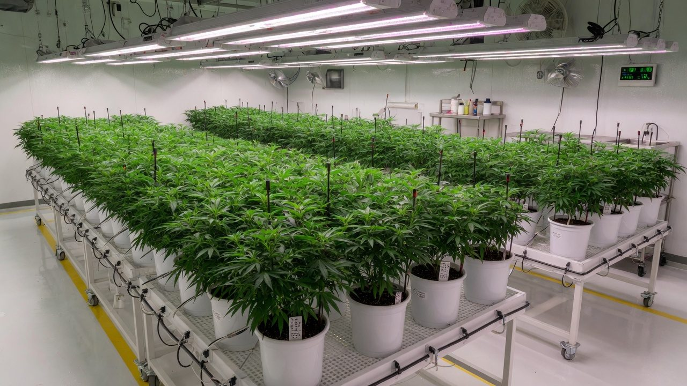
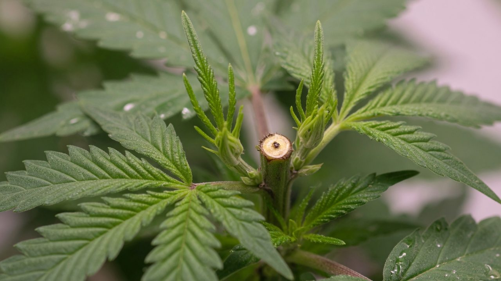
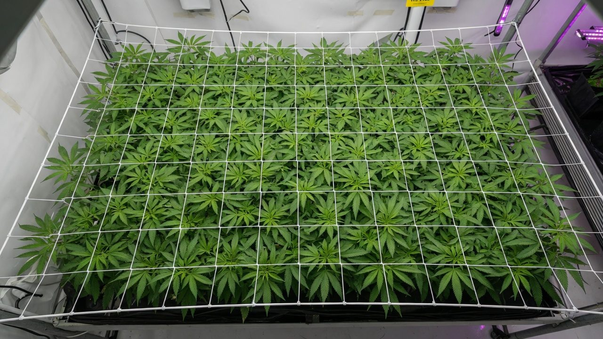
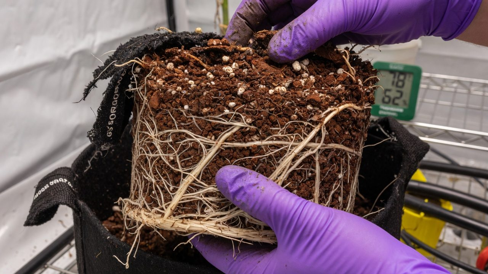

The vegetative stage: make the frame, then do the flip
This paper shows you how to calculate the correct number of days of the vegetative stage for your room. You use the plant count, the pot size and the canopy area. The paper also shows that, in the vegetative stage, you prevent almost all problems in week 3 of flowering, or you cause them. At the end, you have a sequence of decisions that gives the flip day from a specification and not from an estimate.
Purpose and scope
Before the flip to 12/12, the vegetative stage makes four items. These four items give most of the possible harvest. The first two items are the number of bud sites and the quantity of leaf that gives energy to the bud sites. The other two items are the uniformity of the canopy and the capacity of the roots to supply the water and nutrients for the stretch. Flowering does not make these items. Flowering uses the items that the vegetative stage made.
The vegetative stage has no buds and no product to weigh. Thus new growers wait in the vegetative stage, and operators use the stage as a buffer. These two methods have a high cost.
The data of tests of indoor cultivation in other papers show that growers keep plants in the vegetative stage for approximately 2 to 26 weeks. The median is approximately 30 days[1]. The wide range is not an error. Different rooms have different correct numbers of days. This paper shows you how to calculate the number for your room, and not to make an estimate.
The function of the vegetative stage is to make a frame. The frame is the roots, the stems, the nodes and the leaves of the plant. The frame must have the correct size to fill the canopy area of each plant. The plant count, the pot size and the target canopy give the size of the frame.
The size of the frame gives the number of days. All other decisions in this paper start from the frame. These decisions are the maximum flip height, the time of the topping, the climate, the feed and the condition of the root zone.
This paper is for all growers who did the flip because they thought that the size of the plants was sufficient. The growers can have a first tent or a room that has a license. Use this paper with defoliation and training, which tells you how to cut and bend the plants. Also use light acclimation, which tells you how to increase the PPFD. This paper tells you when to do the flip and for how many days to continue the vegetative stage.
Definitions
This paper uses eight terms many times. Read the terms one time. Each term occurs again in the sections that follow.
Evidence and limitations
We want each paper to be correct. Thus we examine each paper for information that is not solid. This information comes from the view of one grower, from a small number of sources, or from grower methods that have no controlled test. We identify this information, and we do not show it as solid.
Frequently there is no paper for the decision that you must make. Then we use the reports of other growers and the methods that work in the rooms that we know. This information can help you, but it is not the result of a laboratory test. Use the methods that work for your plants, for your room and for your meters. If a table does not agree with your crop, use the data from your crop and record the difference.
- The primary definitions and the units of measurement in the paper
- Safety limits that have a citation to a regulation or a specification
- Target ranges for light, climate and feed in each stage. They are start values that you can change.
- SOPs that work in many rooms, but you must adjust them for your genetics and meters
- A number for yield or potency that you will always get, with no test at many sites
- Controller setpoints from a different facility, with no new calibration
If you find an error, make a report. We will correct it. Make the report on GitHub, with the name of the paper and the information that is incorrect. If you have a source, include it: Make a report of an accuracy problem. The regulations, labels and licenses of your area always override each procedure in these papers. The label weak in a paper shows the points where the risk of an error is highest.
Function of vegetative growth
Flowering does not make structure. The buds start at the nodes and branch tips that the plant has at the flip. The buds also start at the new nodes and tips that the stretch adds in the first weeks. Thus the size of the frame at the flip is the maximum limit for the quantity of flower that one plant can hold.
The data from a test show this. In this controlled test, the time of the vegetative stage was different for each group, from 1 to 4 weeks. Each week more in the vegetative stage added approximately 3.3 g of dry flower for each plant, and the relation was almost linear[2].
The number of days of the vegetative stage is a decision, because more days are not always better. The room gives yield for each m² (sq ft), and not for each plant. A full canopy of many small plants and a full canopy of a small number of large plants receive approximately the same quantity of light. In test data, a higher plant density gives a lower yield for each plant, but the yield for each area stays the same or increases[3]. In the data of many tests, the plant density is a weak indicator of the yield for each m² (ft²)[4].
A meta-analysis of the time of the flip gives the same result. For the same area, a short vegetative stage gives the maximum quantity of flower in each unit of time. The cause is that many small frames fill the canopy more quickly[1].
The number of days of the vegetative stage is not a control that you use to increase the yield. The number of days must agree with the plant count. Each plant must make a frame that fills its part of the canopy, not more and not less.
A small number of plants has a large canopy area for each plant and a long vegetative stage. A large number of plants has a small canopy area for each plant and a short vegetative stage. The canopy is the same in the two conditions. The number of crop cycles each year, the work for the plant count and the risk are different. The section on the cost of the vegetative stage gives more information.
Keep the plants in the vegetative stage until the canopy area of each plant is full. The height of each plant must be the maximum flip height or less. Then do the flip. Each day of the vegetative stage that is too short gives an area of the canopy that is not full in flowering. Each day that is too long removes a fraction of a crop cycle.

Days of the vegetative stage: plant count, pot size and canopy
Do the steps in this sequence. The number of days is the last result. Do not use the number of days as an input.
- 1Find the plant countUse the lowest of these limits. The limits are the license condition, the number of tags, your risk limit, and the number that you select. You usually cannot change this number easily in the room.
- 2Measure the canopyMeasure the area of the bench or tray that you will fill from wall to wall, in m² (ft²). Divide the area by the plant count. The result is the canopy area of each plant. Each plant must make a frame for this area.
- 3Select a pot for the frameThe root zone has a limit for the size of the plant. For a small canopy area, use a pot of 4–6 L (1.1–1.6 gal). For a canopy area of half a square meter, use 10–30 L (2.6–7.9 gal). For large plants with a full square meter, use 30 L or more (7.9 gal or more) or beds. The next section gives more information.
- 4Select the training that makes the shapeFor a small canopy area, use plants with one cola and no topping. For a usual canopy area, do the topping one time and low-stress training (bend the stems to the side and attach them). For large plants, do the topping in stages. Refer to defoliation and training.
- 5Continue until the conditions are correct, then do the flipDo the flip when the canopy is approximately 80 to 90% full and the tops have the same height. The height of the plants must be the maximum flip height or less (refer to the section on the stretch). Use this condition of the canopy and not a date. The number of days until this condition is the number of days of your vegetative stage. Record this number for the next crop cycle.
| Type | Plants for each m² | Pot or block | Usual vegetative stage | Training |
|---|---|---|---|---|
| Sea of green (SOG) | 10-20+ | 4-6 L | approximately 7 to 14 days | No training. One cola for each plant. |
| Usual topped plants | 2-4 | 10-30 L | approximately 14 to 28 days | One topping, low-stress training and a net |
| Large plants, with a plant count that has a limit | approximately 1 | 30 L or more, or beds | 35 days or more | Topping in stages and a net |
The meta-analysis also gives this information. A short vegetative stage gave more flower biomass. But the concentration of cannabinoids was at the maximum with a longer vegetative stage (approximately 6 to 7 weeks) in the data from all the tests[1].
This signal is weak and it is different for different cultivars. Do not use it as a target. The genetics and the conditions of flowering give most of the potency. If a limit of the plant count causes a long vegetative stage, the data do not show that the quality is lower.
Pot size and days of the vegetative stage
The roots are the half of the frame that you cannot see, and they give the limit for all the growth. Each leaf uses light to make sugar by photosynthesis. Photosynthesis supplies the energy for each gram of new tissue that the plant makes. When the root zone has no more space, photosynthesis is the first function that becomes slower. The leaf stays green, but it makes less sugar.
A meta-analysis of 65 container tests showed that, on average, two times the volume of the root zone increased the plant biomass by approximately 43%. Roots in a small volume decrease the growth mostly because the photosynthesis for each unit of leaf area decreases. The lower supply of water is not the only cause[5]. A root-bound plant has a lower growth rate, but the plant does not always show a sign of the problem.
Each pot size gives a maximum time of vegetative growth before the plant becomes too large for the pot. After this time, you can transplant the plant again, or you can do the flip with a root-bound plant. A second transplant is correct if it is in your procedure. Do not do the flip with a root-bound plant. The times below are usual methods of growers. Cultivars with a high growth rate in warm rooms use the time more quickly:
| Container | Correct time in the vegetative stage | For these plants |
|---|---|---|
| 4-6 L pot / 4″ block | approximately 1 to 2 weeks | SOG plants with one cola |
| 10-15 L pot / block on slab | approximately 2 to 4 weeks | Usual topped plants |
| 25-30 L pot | approximately 4 to 6 weeks | Large topped plants and large plants |
| 45 L or more / beds | 6 weeks or more | Very large plants and frames of the size of a mother plant |
Transplant the plant to a larger pot if the roots go around the wall of the pot. Also transplant the plant if the pot dries in a small number of hours. Do this transplant one week before the flip, and not after the flip.
The stretch increases the quantity of water and nutrients that the plant uses to approximately two times in three weeks. A root-bound pot cannot supply this quantity. The plant then shows wilt between the irrigations. A deficiency occurs in weeks 2 to 3 of flowering. The buds are small and have low density. The plant can be in good condition at the flip.
Calculate the flip height from the clearance of the ceiling
The most frequent error in the vegetative stage is not a stage that is too short. The error is a flip at a height that is too large. After the flip, most cultivars increase quickly in height for 1 to 3 weeks. The stretch almost stops at approximately day 21 of flowering[7].
The stretch is very different for each cultivar. Cultivars with low stretch and mostly indica genetics can add approximately 50% to their height. Usual hybrids increase their height to approximately two times. Cultivars with high stretch and mostly sativa genetics can increase their height to two times or more[6][7].
For most plants, the height after the stretch is approximately 1.5 to 2 times the flip height. This number is the stretch ratio of the cultivar. Calculate the stretch before the flip. After the flip, you cannot decrease the height of the plant, and the ceiling does not move.
There are three steps. First, subtract the fixture, the gap above it and the clearance to the canopy from the height of the room. In total, these values are usually approximately 60–90 cm (24–35 in) for LED, and more for HPS. Then subtract the height of the pot and the bench, approximately 30 cm (12 in). The result is the available plant height H.
Divide H by the stretch ratio of your cultivar. The result is the maximum flip height. If you do not know the stretch ratio of the cultivar, use ×2. Growers usually do the flip at half of the available height[6].
| Cultivar type | Usual stretch ratio | Maximum flip height (H = 100 cm) |
|---|---|---|
| Low stretch, mostly indica | ×1.5 | A maximum of 65 cm |
| Usual hybrid | ×2.0 | A maximum of 50 cm |
| High stretch, mostly sativa | ×2.5 or more | A maximum of 40 cm |
Attach a label to one plant of each cultivar. Measure the height of the plant on the flip day and again on day 21 of flowering. Divide the second height by the first height. Write the ratio in the record of the cultivar. With this ratio, you know the stretch for the next crop cycle. After two crop cycles, we recommend that you use the ratio of your plants and not a range from other papers.

Topping and FIM: time and number of nodes
Topping changes the one tip that has apical dominance into two equal leaders and a wider frame with a more level top. The paper defoliation and training gives all the information about the procedure and the cause. This paper is about the time of the topping and its cost in days, because each topping uses days of the vegetative stage.
Do the topping when the plant has 4 to 6 nodes. A clone that has roots, or a seedling, usually has this number of nodes 3 to 4 weeks after the start of the vegetative stage. Cut above node 4 (between node 4 and node 5). If you cut higher, the topping has less effect. If you cut lower, you remove too much of the plant, and it is possible that the growth stops[8].
Count the nodes from the bottom. Do not count the cotyledons (the first leaves, which have a smooth, circular shape). The recovery after the topping is 7 to 14 days. During the recovery, the growth rate is low. Add the days of the recovery to the days of the vegetative stage[8].
FIM cuts through approximately ¾ of the tip, from the top. It does not cut below the tip. FIM is faster, but you know the result less accurately than with topping. FIM gives 3 to 4 leaders and not 2 leaders.
The plant keeps more height, but the new growth has less uniformity. FIM is good for tents and for large plants. Most commercial rooms use topping, because it gives two leaders that are equal.
- SOG: Do not do the topping. The primary function of SOG is one fast cola for each plant.
- Usual topped plants: Do the topping one time at 4 to 6 nodes. Do it a minimum of 10 to 14 days before the flip. Then the plant completes the recovery in the vegetative stage[8].
- Large plants: Do the topping in stages. Do the topping, wait for the recovery of the leaders, then do the topping of the leaders. Each stage adds approximately 1 to 2 weeks to the vegetative stage. Three stages are more than one month of time for the structure.
- Do not do the topping during the stretch. The plant changes its structure for flowering, and the new growth is different on different parts of the plant. Also, you use days of recovery that you do not have.
Subtract 10 to 14 days from the flip day. The result is the last day to do the topping, or to cut a large part of the plant. If you do the topping after this day, there are two possible results. The first result: you wait before you do the flip. The second result: you do the flip during the recovery.
If you wait, you have a cost. Make this decision carefully. If you do the flip during the recovery, the leaders have different sizes. The stretch increases the difference, and the uniformity of the canopy is low for all of flowering.

Canopy in vegetative growth
The height of the light is one setting for the room: one fixture height for all the plants below it. The height of the light must agree with the plant that has the largest height. If you increase the height of the light to prevent damage to this plant, all the shorter plants receive light that is not sufficient. If you keep the light at a low height, this plant shows bleaching and heat stress. At the flip, the canopy can have no uniformity. Then plants near each other have a PPFD difference of more than 100 µmol for all the flowering cycle.
Uniformity is also important for commercial rooms, and not only for the growth of the plant. A canopy with a higher density and a lower uniformity increases the variation of the cannabinoid content. The variation occurs between plants and in one plant, and you can measure it[3]. This variation is a risk to the grade when laboratory tests are necessary. To make the height of the canopy equal in the vegetative stage, use these easy methods in this sequence:
- Start with the same height. Use one cultivar in each light zone and clones from one group. The difference between the times when the clones made roots is a small number of days. Put plants of the same size together at the transplant. A plant that is 30% smaller than the group does not become the same size as the group. Remove this plant or put it on a different bench.
- Position: Put the cultivars with the largest height at the edges and the corners, where the PPFD decreases. Put the short plants in the middle, below the area with the highest PPFD.
- Bend the plants down and do not cut them. From the middle of the vegetative stage, bend the leaders with the largest height to the side. Attach them (low-stress training). Thus the short plants near them fill the gap, and you do not use recovery time.
- Install the net before the stretch. Put the trellis net above the canopy in the last part of the vegetative stage, or at the flip. All the plants are short at this time. In weeks 1 to 3 of flowering, put the tops through the openings of the net.
In week 3 of flowering, the plants have resin and many branches that touch each other. If you install a net at this time, the net breaks branches and the work uses many hours. The net must hold the plants while the stretch occurs. If you do not install the net on the flip day, you usually do not install it.
Vegetative climate targets
In the vegetative stage, the room has a higher temperature, a higher humidity and less stress to the plant than in flowering. The differences are small. The cause is that the plant is almost all leaf, and the roots are not deep in the first stage. The plant makes tissue, and the ripening of the tissue does not start.
The table gives the ranges that you can use. The two figures below give more information about the temperature and the PPFD.
Read this information about the row for VPD before the numbers. At a given temperature, air can contain only a maximum quantity of water vapor. The difference between the vapor in the air and this maximum shows how much more vapor the air can receive at this time. This difference is the vapor pressure deficit (VPD), in kPa.
When the VPD increases, the air removes water from the leaf more quickly. The target VPD is approximately 0.8 kPa at the start of the vegetative stage, and it increases to 1.0–1.3 kPa before the flip. The table below gives more information.
| Condition | Start of the vegetative stage (new transplant) | End of the vegetative stage (before the flip) | Source |
|---|---|---|---|
| Air temperature, lights on | 25-28 °C | 25-30 °C | The photosynthesis of cannabis leaves is at the maximum at approximately 25-30 °C[11][10] |
| Relative humidity | 65-75% | 55-65% | The reference gives a target of approximately 75% for plants in the first stage. The target then decreases to approximately 55 to 60%[10] |
| VPD | approximately 0.8 kPa | 1.0-1.3 kPa | The same reference gives these values as vapor pressure deficit[10] |
| PPFD | 300-600 µmol/m²/s, with a ramp | 600-900 µmol/m²/s | A test of 21 days of vegetative growth, with values from 135 to 1430 µmol[9] |
| Photoperiod | 18/6 (grower method) | 18/6 until the flip day | Long days keep the plants in the vegetative stage. Cultivars can start flowering at photoperiods of a maximum of approximately 14 h[12] |
| CO2 | The usual air of the room (approximately 400-600 ppm) is sufficient | 700 to 800 ppm or more has an effect only with a high PPFD | Photosynthesis increases when the CO2 increases to approximately 750 ppm or more, at high light[11] |
The light in the vegetative stage changes the shape of the plant and not only the speed of growth. In the test of 21 days, a higher PPFD made the plants shorter, with thicker stems and shorter internodes. The change was almost linear.
At approximately 600 µmol, the frame was more open and had better airflow. At approximately 900 µmol, the transplants were short and strong. There were no signs of light stress, also at the top of the range of the test[9]. Operators of commercial rooms want this type of transplant.
Low light (150-300 µmol) in the vegetative stage is the cause of long and weak plants at the flip in tents. Increase the intensity in steps during some days, and not in one step. The paper light acclimation gives the information about the ramp.
Keep the photoperiod of the vegetative stage at 16 to 18 h. Add the light cycle to your checks for each day. A cultivar can start flowering at a photoperiod that is longer than 12 hours. In a test of ten cultivars, all the cultivars started flowering at photoperiods of a maximum of 14 h[12].
The days in a vegetative room can become shorter. Examples are a timer that does not operate correctly and a light controller with an incorrect setting. A long period with no electricity is also an example. In this condition, the plants that you want to keep in the vegetative stage can start the flip.
Vegetative nutrition
In the vegetative stage, the plant makes mostly protein and chlorophyll, and the two contain much nitrogen. Thus each feed for the vegetative stage has a higher proportion of nitrogen (N) than the feed for flowering.
The data show the relation between the dose of N and the growth accurately. In tests of fertigation on medical cannabis, the vegetative growth was at the maximum at approximately 160 mg/L N. Plants at 30 mg/L had nitrogen deficiency that you can see, and plants at 320 mg/L had less growth than the maximum[13]. More nitrogen does not give more growth. The curve has a peak.
In coco or rockwool with drain to waste, the primary control is the feed EC. Increase the feed EC when the plant size increases. The values below are approximate grower methods. Do a check of the values with the runoff EC and the color of the leaves:
| Stage | Feed EC (mS/cm) | Task |
|---|---|---|
| New transplant, week 1 | approximately 1.5 to 1.8 | A careful start, while the roots go into the new volume |
| Middle of the vegetative stage | approximately 2.0 to 2.4 | Full feed with a high proportion of N. The plant makes new tissue at the maximum rate. |
| Last week of the vegetative stage, until the flip | approximately 2.4 to 3.0 | Increase the EC. The plant has reserves when the stretch starts. |
Two methods do most of the work. Use the color and not the date. In the vegetative stage, the plant must have an equal medium-green color. If the bottom leaves are light green or yellow, the supply of N is less than the growth rate. If the leaves are blue-green and almost black, with claw tips, the supply of N is more than the growth rate.
Do not decrease the N before the flip. The stretch uses mostly nitrogen that the plant moves from the tissue of the vegetative stage. Thus a plant with light green or yellow leaves at the start of 12/12 has a strong fade by week 3 of flowering. The fade goes from the bottom to the top.
Correct light green leaves in the vegetative stage. At the flip day, the plant then has most of the nitrogen for the stretch. Growers frequently think that the nutrients for flowering cause yellow bottom leaves in week 3 of flowering. The cause is usually in the time two weeks before. The plant had feed that was not sufficient, a root zone that was too small, or light stress. The plant then started the stretch with no nitrogen reserve.

Growth of the roots before flowering
The fastest method to stop the growth for one week is to apply too much water to a new transplant. A new transplant has a small root ball in a large volume of wet substrate. If the volume stays saturated, the roots have no cause to go into the volume, and the volume has no oxygen for them.
The manufacturer of stone wool gives information for the vegetative stage. Apply small, frequent shots of approximately 3% of the substrate volume, with a small runoff fraction of 5 to 15%. The information also shows that drybacks must not be large. A water content of less than approximately 25 to 30% in blocks stops new roots[14]. The substrate must have sufficient water for the roots. The substrate must also dry, and then the roots continue to go in the direction of the water.
The root zone, and not the date, shows the result of the vegetative stage on the flip day. The night dryback is the quantity by which the substrate moisture decreases from the last irrigation shot to the start of the next light period. The roots continue to absorb water during the night. Thus the weight of the pot is lower at the start of the next light period, and you can measure the difference.
When the night dryback is the same on two or three nights in sequence, the roots are in good condition and go into the substrate. Three checks show that the roots are correct for the flip. First, you can see roots at the walls of the container and at the drain holes (or on the face of the slab). Second, the night dryback is stable: the sensor shows the same decrease each day at the start of the light period. Third, the plant uses more water each day.
A root system in good condition that goes into the substrate supplies the water and nutrients for the stretch. In the stretch, the quantity of water and nutrients that the plant uses increases to approximately two times in three weeks. If you do the flip before the roots are in this condition, the stretch stops. If you wait for a long time, the plant becomes root-bound (refer to the section on pot size).
- 1Roots at the wallsMake sure that white roots are at the walls and the drain holes of the pot. For a block, make sure that white roots are around the face of the block. Make sure that the plant uses more water each day.
- 2Height less than the limitMake sure that the top with the largest height is at the maximum flip height or lower (the available height divided by the stretch ratio).
- 3Uniformity and a full canopyMake sure that the height difference between the tops is approximately 10 cm (4 in) or less. Make sure that approximately 80 to 90% of the canopy area of each plant is full. Install the net.
- 4Recovery after the toppingMake sure that the last topping was a minimum of 10 to 14 days before the flip. Make sure that the leaders are equal. Make sure that you do not cut a large part of the plant when the stretch starts[8].
- 5Feed and green colorMake sure that there is no deficiency. Use the feed EC for the end of the vegetative stage. Make sure that the plant has an equal medium-green color and has N reserves for the stretch.
Do the flip only when all five conditions are correct. If one condition is not correct, correct it first. If you wait two days to complete the growth of the roots, you use two days. If you do the flip when one condition is not correct, the result is a weak flowering cycle.
Cost of the vegetative stage
The genetics gives the time of flowering. It is approximately 56 to 63 days, and you cannot change it easily. Thus the number of days of the vegetative stage is the time that you control. It changes three quantities: crop cycles each year, plants for each gram and risk for each plant.
If the plant count has a limit, the number of days of the vegetative stage is the control that you can use. A license condition, an agreement or your risk model can limit the number of plants. In this condition, the yield for each plant is the important value. The yield for each plant increases with the days of the vegetative stage and with the size of the frame[2].
A smaller number of large plants also decreases the cost of operation. This condition gives a smaller number of tags and records for each gram in a traceability system. It gives a smaller number of transplants and a smaller number of plants to examine for IPM. It also gives a lower risk of variation between plants than a canopy with a high density[3].
If the plant count has no limit, time is the limit. Then use a short vegetative stage, a high density and more crop cycles[1].
The days of the vegetative stage must also agree with the size of your vegetative room. When the production is stable, a flowering room gets a new group of plants each N weeks. The vegetative area must hold each group for all the days of the vegetative stage. When the vegetative stage is longer, more groups are on the vegetative benches at the same time.
A long vegetative stage gives three results. The vegetative room is larger, and it has more light. The plants have more weeks of risk from a large number of pests in the vegetative room. The cost for each m² (ft²) is low, but it is not zero.
When the plant count has no limit, the method is time: a short vegetative stage, a high density and the maximum number of crop cycles. When the plant count has a limit, the method is frame: a long vegetative stage, large pots and large plants. The worst condition is the middle: plants of medium size and medium density that growers select without a check. This condition is not the best for time, and it is not the best for frame.
Frequent errors in vegetative growth
Each of these errors has a low cost to prevent in the vegetative stage, and a high cost to find in flowering. Most rooms with problems in week 3 of flowering had one of these errors one month before.
The pot dries in a small number of hours, the roots go around the walls, and the growth stops. The grower does the flip with these signs. The stretch uses a quantity of water and nutrients that is more than the root system can supply. Then the plant shows wilt, a fade in the first stage of flowering, and buds with low density. Correction: Select a pot for the number of days of the vegetative stage. If you are not sure, transplant the plant to a larger pot and add one week before the flip.
After the stretch, the height of the plant is more than the available height. The tops touch the fixture and show bleaching and heat damage. If you decrease the light to prevent damage to the tops, the other plants in the room receive light that is not sufficient. Correction: The maximum flip height is the available height divided by the stretch ratio. Apply this limit on the flip day for all plants.
One cultivar with a large height can increase the height of the fixture. Plants that stayed too long in the vegetative stage can have the same effect. The other plants receive light that is not sufficient for nine weeks.
Correction: Make the height of the canopy equal in the vegetative stage. Use clones of the same size. Bend the plants that have the largest height down, and put them at the edges. Remove the smallest plants. Install the net at the flip.
If you cut the plant ten days before the flip, the flip is during the recovery. The leaders have different sizes, and the stretch increases the difference. The canopy then has a low uniformity. Correction: Do the last topping 10 to 14 days before the flip. Write this date in your record on the day that you do the topping.
The grower keeps a large new pot saturated to help the plant. The roots do not have sufficient oxygen, they do not go into the substrate, fungus gnats occur, and the growth stops for one week. Correction: Apply small, frequent shots with a small runoff. Let the roots go to the water in the new volume.
The grower adds 'one more week' with no data, no canopy specification and no pre-flip check. Each week that is not in the procedure removes a fraction of a crop cycle. This method has the highest cost in the room. Correction: Before the transplant, write the specification: the plant count, the canopy area of each plant and the maximum height. Do the flip when the pre-flip check is correct.
Troubleshooting
If you compare the plant with the specification, you see the first signs of a problem in the vegetative stage. The frequent problems are in the table below:
| Sign | Possible cause | Correction |
|---|---|---|
| No growth of the transplant for one week or more | Too much water at the start. The roots do not go into the substrate. | Decrease the shot sizes. Let air go into the substrate between the shots. Do a check of the drainage[14] |
| Long internodes and weak stems | The PPFD is too low for the frame that you want | Increase the light in the vegetative stage in steps to approximately 600–900 µmol[9]. Add airflow to make the stems strong. |
| Light green color on all leaves, with the bottom leaves first | The supply of nitrogen is less than the growth rate | Increase the feed EC or the N to the value for maximum growth in the vegetative stage[13]. Examine the plant again in 4 to 5 days. |
| Blue-green color, almost black, with claw tips | The supply of nitrogen is more than the growth rate | Decrease the feed EC. Keep the ratio with a high proportion of N, but decrease the dose. |
| Pistils or flowers in the vegetative room | A fault in the photoperiod: a timer, a controller or a light leak, with a day of 14 h or less | Do an audit of the light cycle and of the procedure for the door[12]. Preflowers (one calyx at a node) are usual maturity. Full flowering is not usual. |
| One plant has a much larger height than the group | Different cultivars below one light, or clones of different ages | Bend the plant down and put it at the edge of the bench at this time. In the next crop cycle, make groups of plants of the same cultivar that made roots at the same time. |
| You must apply water to the pot 3× each day | The plant is root-bound: the time for this pot is at the end | Transplant the plant to a larger pot and wait one week. Or do the flip at this time if all the other conditions of the pre-flip check are correct. Do not let a root-bound plant start the stretch[5] |
The function of the vegetative stage is to make a canopy that agrees with the specification. It is not a time in which you wait. Write the specification before the transplant. The specification gives N plants. The canopy area of each plant is full, and the plant has the maximum flip height or less.
The canopy has equal height, the roots are at the walls, and the leaves are green. Each day of the vegetative stage must make the room agree more with the specification, or the day gives no result. When the room agrees with the specification, do the flip on that day.
The paper defoliation and training gives the procedures to cut and bend the plants. The paper light acclimation gives the safe procedure to increase the PPFD from clone light to a vegetative canopy of 900 µmol.
References
- Dang M, Arachchige NM, Campbell LG (2022). Optimizing photoperiod switch to maximize floral biomass and cannabinoid yield in Cannabis sativa L.: a meta-analytic quantile regression approach. Frontiers in Plant Science 12:797425. (Vegetative durations across 26 studies spanned 13-180 days, median 30; floral biomass favoured short vegetative periods while cannabinoid concentration peaked with longer ones.) https://www.frontiersin.org/articles/10.3389/fpls.2021.797425/full
- Schober T, Präger A, Hartung J, Graeff-Hönninger S (2024). The effects of plant density and duration of vegetative growth phase on agronomic traits of medicinal cannabis (Cannabis sativa L.): a regression analysis. PLoS ONE 19(12):e0315951. (Per-plant inflorescence yield rose ~3.3 g per extra week of veg across 1-4 weeks; higher density cut yield per plant while area yields held or rose.) https://journals.plos.org/plosone/article?id=10.1371/journal.pone.0315951
- Danziger N, Bernstein N. Too Dense or Not Too Dense: Higher Planting Density Reduces Cannabinoid Uniformity but Increases Yield/Area in Drug-Type Medical Cannabis. Frontiers in Plant Science. 2022;13:713481. doi:10.3389/fpls.2022.713481 https://doi.org/10.3389/fpls.2022.713481
- Backer R, Schwinghamer T, Rosenbaum P, McCarty V, Eichhorn Bilodeau S, Lyu D, Ahmed MB, Robinson G, Lefsrud M, Wilkins O, Smith DL (2019). Closing the yield gap for cannabis: a meta-analysis of factors determining cannabis yield. Frontiers in Plant Science 10:495. (Plant density reduced yield per plant but was not an effective predictor of yield per square metre.) https://pmc.ncbi.nlm.nih.gov/articles/PMC6491815/
- Poorter H, Bühler J, van Dusschoten D, Climent J, Postma JA (2012). Pot size matters: a meta-analysis of the effects of rooting volume on plant growth. Functional Plant Biology 39(11):839-850. (Across 65 studies, doubling pot size increased biomass ~43% on average; small pots throttle growth mainly via reduced photosynthesis per unit leaf area.) https://www.publish.csiro.au/fp/fp12049
- Nebula Haze. How to prepare for the flowering stretch (flip at roughly half your available final height; stretch magnitude varies strongly by strain). GrowWeedEasy, industry cultivation guide. (source not from a journal, for example from a manufacturer) https://www.growweedeasy.com/flowering-stretch
- I Love Growing Marijuana (ILGM). Stretching cannabis plants: what it is and why it matters (stretch largely complete around day 21 of flower; some plants double or triple in height; sativa-leaning cultivars stretch more). Industry cultivation guide. (source not from a journal, for example from a manufacturer) https://ilgm.com/resources/guides/stretching-cannabis-plants
- Royal Queen Seeds. Topped vs non-topped cannabis plants — is topping worth it? (Top at 4-6 nodes, ~3-4 weeks into veg, cutting between the 4th and 5th node; allow 7-14 days of recovery and extend veg accordingly.) Industry cultivation guide. (source not from a journal, for example from a manufacturer) https://www.royalqueenseeds.com/us/blog-topped-vs-non-topped-cannabis-plants-is-topping-worth-it-n1532
- Moher, M., Llewellyn, D., Jones, M., & Zheng, Y. (2022). Light intensity can be used to modify the growth and morphological characteristics of cannabis during the vegetative stage of indoor production. Industrial Crops and Products, 183, 114909. https://doi.org/10.1016/j.indcrop.2022.114909 https://www.sciencedirect.com/science/article/abs/pii/S0926669022003922
- Jin D, Jin S, Chen J (2019). Cannabis indoor growing conditions, management practices, and post-harvest treatment: a review. American Journal of Plant Sciences 10(6):925-946. (Optimum growth ~25-30 °C; RH ~75% for juveniles stepping down to ~55-60% through veg and flower, i.e. VPD ~0.8 rising to ~1.3-1.4 kPa.) https://www.scirp.org/journal/paperinformation?paperid=93052
- Chandra S, Lata H, Khan IA, ElSohly MA (2008). Photosynthetic response of Cannabis sativa L. to variations in photosynthetic photon flux densities, temperature and CO2 conditions. Physiol. Mol. Biol. Plants 14(4):299-306. https://pmc.ncbi.nlm.nih.gov/articles/PMC3550641/
- Moher M, Llewellyn D, Jones M, Zheng Y (2023). Is twelve hours really the optimum photoperiod for promoting flowering in indoor-grown cultivars of Cannabis sativa? Plants 12(14):2605. https://doi.org/10.3390/plants12142605
- Saloner, A., & Bernstein, N. (2020). Response of Medical Cannabis (Cannabis sativa L.) to Nitrogen Supply Under Long Photoperiod. Frontiers in Plant Science, 11, 572293. https://doi.org/10.3389/fpls.2020.572293 https://www.frontiersin.org/journals/plant-science/articles/10.3389/fpls.2020.572293/full
- Grodan. Grow Guide, Cannabis Edition — Chapter 3: introduction to crop steering (vegetative-phase irrigation as small frequent shots ~3% of substrate volume, 5-15% runoff fraction, avoiding drybacks below ~25-30% WC in blocks after transplant). Manufacturer technical guide. (source not from a journal, for example from a manufacturer) https://www.grodan101.com/syssiteassets/downloads/grow-guide/chapter-3---introduction-to-crop-steering.pdf
Each citation in the paper, for example [1], refers to an item in this list. Each item is a primary source or an instruction from an authority, unless the item shows a different type. The results of cannabis tissue culture change much with the genotype. Before you use the dilutions, hormone doses and local regulations, make sure that they agree with the primary sources.